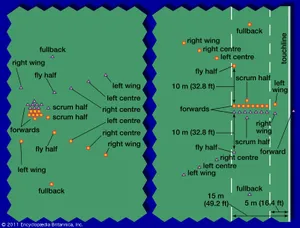

RUGBY
Rugby, football game played with an oval ball by two teams of 15 players (in rugby union play) or 13 players (in rugby league play). Both rugby union and rugby league have their origins in the style of football played at Rugby School in England. According to the sport’s lore, in 1823 William Webb Ellis, a pupil at Rugby School, defied the conventions of the day (that the ball may only be kicked forward) to pick up the ball and run with it in a game, thus creating the distinct handling game of rugby football. This “historical” basis of the game was well established by the early 1900s, about the same time that foundation myths were invented for baseball and Australian rules football. While it is known that Webb Ellis was a student at Rugby School at the time, there is no direct evidence of the actual event’s having taken place, though it was cited by the Old Rugbeian Society in an 1897 report on the origins of the game. Nevertheless, Rugby School, whose name has been given to the sport, was pivotal in the development of rugby football, and the first rules of the game that became rugby union football were established there in 1845.
Rugby is now a popular sport in many countries of the world, with clubs and national teams found in places as diverse as Japan, Côte d’Ivoire, Georgia, Uruguay, and Spain. Rugby among women is one of the world’s fastest-growing sports. At the turn of the 21st century, the International Rugby Board (IRB; founded in 1886 as the International Rugby Football Board), headquartered in Dublin, boasted more than 100 affiliated national unions, though at the top level the sport was still dominated by the traditional rugby powers of Australia, England, France, Ireland, New Zealand, Scotland, South Africa, and Wales.
Different forms of football have existed for centuries. (For more on the development of football sports, see football.) In Britain, football games may have been played as early as the time of Roman occupation in the 1st century BCE. During the 14th and 15th centuries CE, Shrove Tuesday football matches became annual traditions in local communities, and many of these games continued well into the 19th century. These localized versions of folk football (a violent sport distinctive for its large teams and lack of rules) gradually found favour within the English public (independent) schools, where they were modified and adapted into one of two forms: a dribbling game, played primarily with the feet, that was promoted at Eton and Harrow, and a handling game favoured by Rugby, Marlborough, and Cheltenham.
Game playing, particularly football, was encouraged at Rugby School by influential headmaster Thomas Arnold (1828–42), and many boys educated at this time were instrumental in the expansion of the game. Rugby football soon became one of the most significant sports in the promotion of English and, later, British imperial manliness. The game’s virtues were promoted by books such as Thomas Hughes’s Tom Brown’s School Days (1857). The cult of manliness that resulted centred on the public schools and the Universities of Oxford and Cambridge, where boys were sent to learn how to become young gentlemen. Part of the schoolboy’s training was a commitment to arduous physical activity, and, by the late 19th century, rugby and cricket had become the leading sports that developed the “civilized” manly behaviour of the elite. It was believed that rugby football instilled in the “muscular Christian” gentleman the values of unselfishness, fearlessness, teamwork, and self-control. Graduates of these public schools and of Oxford and Cambridge formed the first football clubs, which led to the institutionalization of rugby.
Once they had left school, many young men wanted to continue playing the game of their youth, and the early annual matches between alumni and current senior students were not enough to satisfy these players. Football clubs were formed in the mid-19th century, with one of the very first rugby clubs appearing at Blackheath in 1858. Rugby enthusiasm also spread rapidly to Ireland and Scotland, with a club founded at the University of Dublin in 1854 and the formation by the Old Boys of Edinburgh of the Edinburgh Academicals Rugby Football Club in 1858. In 1863 the tradition of club matches began in England with Blackheath playing Richmond.
Representatives of several leading football clubs met in 1863 to try to devise a common set of rules for football. Disputes arose over handling the ball and “hacking,” the term given to the tactics of tripping an opponent and kicking his shins. Both handling and hacking were allowed under rugby’s rules but disallowed in other forms of football. Led by F.W. Campbell of Blackheath, the rugby men refused to budge over hacking, calling those against the practice “unmanly.” Though Campbell’s group was in the minority, it refused to agree to the rules established for the new Football Association (FA) even though many elements of rugby rules were included in early compromises. Ultimately, rugby was left outside the FA. Despite the initial reluctance to abandon hacking, rugby clubs began to abolish the practice during the late 1860s. Blackheath banned it in 1865, and Richmond supported a similar prohibition in 1866.
Rugby received bad publicity after a Richmond player was killed in a practice match in 1871, prompting leading clubs to respond to Richmond and Blackheath’s call for an organizational meeting. Thus, in 1871 members of leading rugby clubs met to form the Rugby Football Union (RFU), which became the governing body for the sport. By this time, hacking had largely disappeared from club rugby, though it remained a part of the game’s “character building” qualities at Rugby School. As a result of its continued adherence to the practice, Rugby School did not join the RFU until 1890.
While handling the ball and hacking set rugby apart from association football (soccer) in the early days of the sport, further rule changes served to cement the distinctive character of rugby. Most significant, rugby rules enforced an offside rule that required all players in open play to remain behind the ball. The game is perceived as being somewhat rough; whereas in American and Canadian gridiron football, players wear padding and protection to guard against injury from contact made with other players, in rugby the wearing of most types of padding and helmets is either looked down upon or illegal.
Based on International Rugby Board (IRB) rules, rugby union is played on a rectangular field not more than 70 metres (229.7 feet) wide; the maximum distance between the goal lines is 100 metres (328 feet), and beyond each goal line the end zone, called “in goal,” extends not more than 22 metres (72.2 feet). At the centre of the goal lines are two goalposts 5.6 metres (18.4 feet) apart with a crossbar 3 metres (10 feet) above the ground. The field also includes two 22-metre lines (located 22 metres from each goal line), a halfway (midfield) line, and 10-metre (32.8 feet) lines at that distance on either side of the halfway line. The sideline is known as the “touch” line, and a kick that goes out of play is said to have gone “into touch.”
The inflated ball is oval and less pointed than the ball used in gridiron football. It is 28 to 30 cm (11 to 11.8 inches) long and 58 to 62 cm (22.9 to 24.4 inches) in circumference, and it weighs 410 to 460 grams (14.1 to 15.5 ounces). The outside casing of the ball is usually of leather or plastic.
The rugby league rules call for a similarly sized field, though the goal posts are slightly closer (5.5 metres [18 feet]). The field typically includes lines marking each 10-metre interval, giving the field an appearance similar to a gridiron football field. The league ball is essentially the same as the union ball.
Players wear cleated shoes, socks, shorts, and jerseys numbered 1 through 15 in rugby union and 1 through 13 in rugby league. The rules now allow the regulated use of light headgear to protect against injury, and an increasing number of players wear scrum caps (made of high-impact foam), headbands (to prevent cauliflower ear), and mouth guards.
Individual matches are adjudicated by a referee supported by one “touch” (or sideline) judge on either side of the field. A match consists of two 40-minute halves. In rugby union a team fields 15 players; in rugby league teams field 13 players. Play starts with a kickoff from the centre of the field, with one team kicking into the territory of its opponents. Players can run forward with the ball, pass the ball backward to teammates, or kick the ball forward. The defending team tries to prevent the attacking team from encroaching on its territory and seeks to gain possession of the ball. Only the player with the ball may be tackled and once tackled must release the ball immediately. The first player arriving usually then picks up the ball though both teams may fight for possession of it. This battle for the ball on the ground is known as a “ruck.” In this situation, teams must approach the ball from their own side of the ball only and must remain on their feet while playing the ball. When the player with the ball is stopped but not taken down to the ground, the struggle for the ball goes on from an upright position. This is known as a “maul.”
If the ball goes out of bounds, play restarts by forming a “line-out.” Two parallel lines of forward players line up at the point where the ball traversed the sideline. The ball is then thrown into play by a player from the team that did not last touch the ball. The player restarts play with an overhead two-handed pass that must travel five metres (16.4 feet) into the field of play and in between the two lines of players. Those in the line-out then jump to catch the ball or to knock it back to a waiting teammate. In open field, if a team loses the ball forward (called a “knock-on”), a scrum is formed. The forwards form a pack into which a back from the team that recovered the loose ball feeds the ball. The ball is retrieved from the scrum when advantageous, and it is passed to the back line.
In rugby union, possession of the ball may be held indefinitely by an attacking team as long as the ball continues to be controlled and not lost forward or taken by the opposing team. In rugby league, by contrast, each team can maintain possession for only six tackles. After the sixth tackle the ball reverts to the opposing team, so teams in possession normally kick the ball to the other team after five tackles unless in scoring range.
In both codes, the ball may be kicked into touch “on the full” (in the air) from inside the defensive 22-metre line. Outside the 22, balls must bounce in the field of play before going into touch. While balls kicked into touch in rugby union come back into play by means of the line-out, rugby league had dispensed with the line-out by 1907 to speed up play.
By 1907 a number of other rule changes had taken place in rugby league, which included the abolition of rucks and mauls and the introduction of the orderly restart of play after a tackle. In rugby league, play is restarted with the tackled player standing up and heeling the ball back to a teammate, who then runs or passes the ball back to another teammate.
In early rugby, the only scores came from goals, and the first goal scored won the match. A goal was scored by kicking the ball through the goalposts and above the crossbar. When a player touched the ball down over the goal line, he then kicked out from the goal line to a teammate, who in turn kicked it toward the goalposts in the face of onrushing defenders. Rugby later developed a more complex scoring system that included the touch down of the ball over the goal line that resulted in an attempt at goal, called a “try,” and goals, called “conversions,” that could be kicked after a try. Scoring changed by 1890 to the pattern favoured at Cheltenham School, whereby points were scored for a try, and penalty kicks were introduced, allowing teams disadvantaged by illegal play to kick for goal and score points if successful. Thus, goals could be scored from an opposition penalty (“penalty goals”) or by dropping the ball on the field of play and kicking it through the uprights (“drop-goal”). In 1892 a try was worth three points, and drop-goals were worth four points. Penalty goals were introduced in 1894. By 1900 a try counted three points, a goal converting a try added two more points, and a penalty or drop-goal from the field was worth five points. Though the point values have changed, the methods of scoring remain the same today.
In both modern games the primary scoring method is for players to score a try. In rugby union these are now worth five points, but they are worth only four points in rugby league. In both codes conversions count two points; penalty goals in rugby union count three points, two in rugby league; drop goals are worth three points in rugby union but only one point in rugby league.